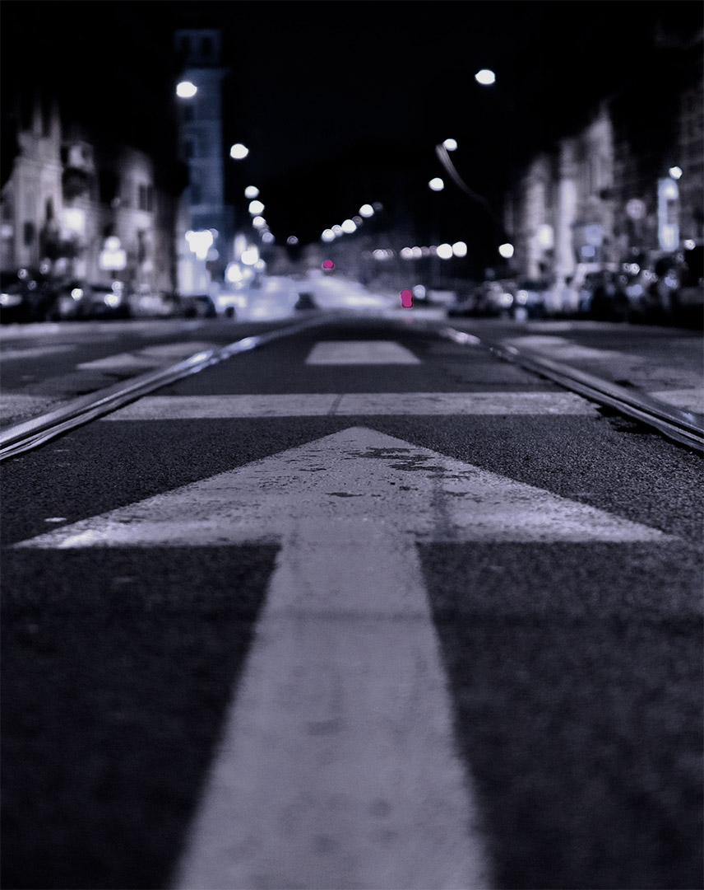
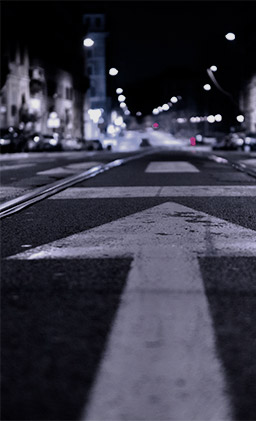

Fixed Gear - the transmission is fixed,
that is, the pedals rotate simultaneously
with the wheel.
The fix is much less detailed, which
means that the bike ... is easier!
Bicycles Fixed Gear is much lighter
27-speed mountain bikes and the rest.
But that's not all.
thinking
forvard
calculate a trajectory
in advance
calculate
a trajectory
in advance
In order to ride a bike
you need to see the road situation
in advance and calculate
its outcome.
On an ordinary bike, you
can ride like a pedal, and some
time by inertia. But Fixed
gear will only move as long
as the pedals rotate.
In order to ride a bike
you need to see the road situation
in advance and calculate
its outcome.


style
Lifestyle
is a sportstyle
Fixed Gear Stream is
a cool bikes, which you can
customize yourself and tuning
bike whenever you want
Cycling is a graceful sport that involves
control, poise and a rhythmic movement of
the legs. Ask anyone who bikes and
they’ll tell you cycling brings
a sense of harmony many other
activities don’t.
Fixed Gear Stream is
a cool bikes, which you can
customize yourself and tuning
bike whenever you want
.jpg)
.jpg)